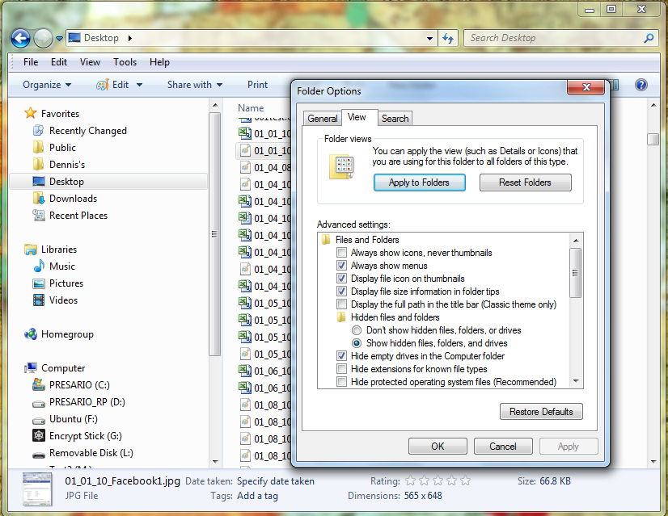
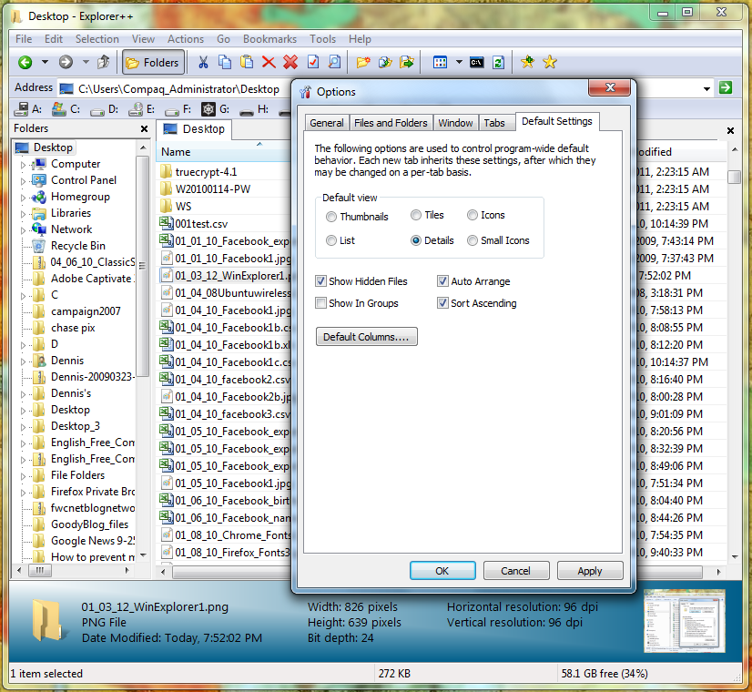

How to see the same view in all Windows 7 folders
Whether you prefer details, lists, thumbnails, or icons, making sure Windows Explorer always displays your files and folders in the view of your choice is more difficult than it should be. Freeware alternatives to Explorer may be just the ticket.
I will go out on a limb and say that in the history of humankind no product has caused more irritation to more people than Windows. At least not since the invention of the pop-top can (and with the possible exception of the Ford Escort).
Terry from Moncton, New Brunswick, agrees:
"Probably a bad way to start, but I think Windows [stinks]. However, I have to use it vis-a-vis my business. Just bought a Windoze 7 machine and its idiotic permissions, among other things, are even more irritating than previous incarnations.... All I want is for the default for all folders to be medium [icons]."
I hear you, Terry. To set the default view for all folders and files to details, follow the four steps described on the Microsoft Support site:
Note: To reset all the folders to the default view settings, repeat these steps, but click Reset All Folders in step 3.The options under the View tab in the familiar Windows Explorer Folder Options dialog box.Screenshot by Dennis O'Reilly
In Vista and Windows 7, you have to follow these steps for five different folder templates to have all Explorer folders show the details view: General Items, Documents, Pictures, Music, and Videos. Even then, a system change may reset your folder views to the Windows default, which uses different views based on the folder's contents.
So where does that leave us poor souls who simply want to see all our files and folders in the same view--details, lists, thumbnails, or icons--in every Explorer folder?
In August 2008 I described how to change the default Explorer view in Vista. The steps are about the same in Windows 7. The comments to that post suggest two alternative methods for resetting Explorer's default folder view.
You can reset the view shown in the five folder templates in Windows Explorer via the Folder Properties dialog. The How-to Geek provides step-by-step instructions for customizing folder views in XP, Vista, and Windows 7.
Going the Explorer-replacement route
You might wonder why Microsoft would make it so difficult for Windows users to see the contents of all folders in Explorer in the view of their choice, whether details, lists, small icons, large icons, or some other view. You might also wonder whether there might be a better file manager available for Windows.
The free Classic Shell file manager was one of the three Windows 7-enhancing utilities I described in April 2010. Gizmo's Freeware site recently updated its list of the best free file managers for Windows.
But my current favorite Explorer alternative is David Erceg's Explorer++donationware, which has many useful file-management features, including the ability to select the default view for all folders: click Tools > Options > Default Settings, make your selection, and click OK.The donationware Explorer file manager lets you set the view for all folders via a single option.Screenshot by Dennis O'Reilly
Explorer++ can be set to work along with Windows Explorer or to replace Explorer. You can drag and drop files between Explorer++ and other programs, including Explorer windows. Like other Explorer replacements, Explorer++ adds multiple tabs for quick folder switches and easy file management. The program also lets you split, merge, or "destroy" files, and create bookmarks and custom keyboard shortcuts.
Even if you use a Windows file manager other than Explorer, you're likely to find yourself navigating through Windows' built-in file and folder viewers from time to time. Unless you find yourself spending a big chunk of your workday managing files and folders on a Windows machine, it may be most efficient to change Explorer's view to your preference once for each folder type and then learn to live with the handful of folders that will inevitably insist on presenting whichever view Microsoft preselected for us.